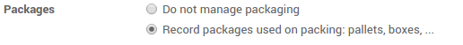
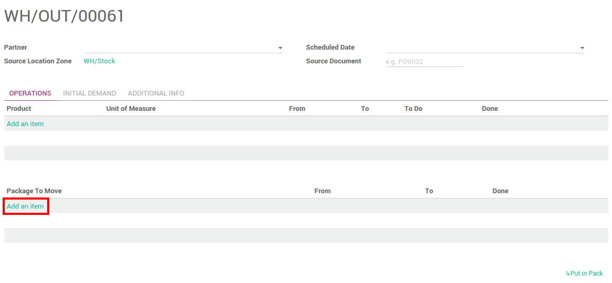

Overview
The package is the physical container in which you put one or several product.
By default, Odoo does not take into account the use of it.
Once you activate the option, you will be able to manage one or several packages when doing your transfers.
Configuration
To configure the use of packages, go to the menu . µ Locate the Packages section and tick Record packages used on packing: pallets, boxes,...
Click on Apply when you are done.
Pack products
Putting products in packs is usually done when processing warehouses transfers (receipt, internals or deliveries).
To be able to put products in pack, the status of your transfer has to be Available.

In the operation tab, you can put your products into one or multiple packages.
Choose the quantity you want to put in the first pack in the Done column, then click on the link Put in Pack.

It will automatically create a pack with the requested quantity.
Do the same steps for the other pieces you want to pack in.
Click on Validate when you are done.
Whole packages transfers
If you are using several locations and/or warehouses, it is possible to transfer packages with its contents.
Configuration
You need to configure the Operation Type to allow moving packages. Go to . Tick Allow moving packs:

Transfer packages
Create a transfer order. Choose the source and the destination locations, then click on Mark as todo. Do not put anything under the Initial Demand tab.
In the Operation tab, click on Add an item under the Package To Move section.
Tick the Done checkbox to confirm the move of the package :
When it is finished, click on Validate.
Packages traceability
To trace a package or check its content, go to .

Click on Package Transfers to see all its moves.